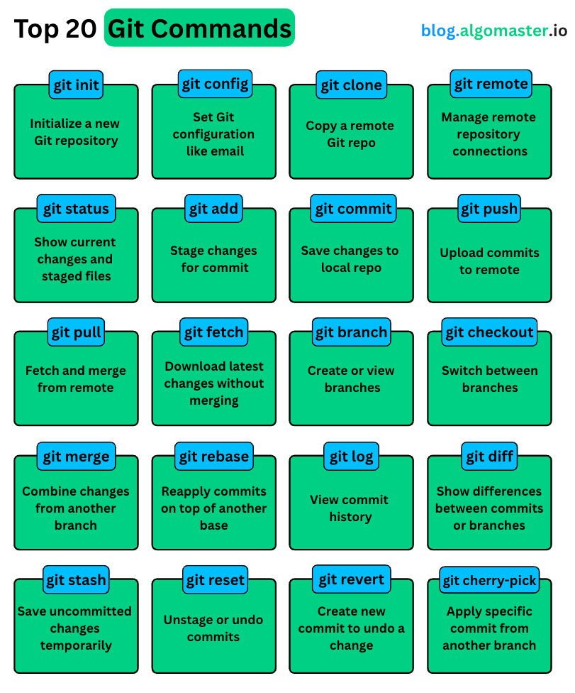

1. git --version
Serve para mostrar a versão atual do software Git
Git
Para você que está começando a mexer com Git, aqui vai um tutorial para você de como utilizar os comandos git
Serve para mostrar a versão atual do software Git
Serve para mostrar o nome do usuário
Serve para definir o nome de usuário durante o cadastro no git (Primeira coisa a se fazer ao iniciar o programa do GitBash)
Serve para definir o email do usuário durante o cadastro no git (Segunda coisa a se fazer ao iniciar o programa do GitBash)
Serve para exibir todas as configurações ativas do Git na sua máquina ou no repositório atual
Serve para inicializar a pasta
Serve para exibir o caminho absoluto da pasta (diretório) atual onde você está navegando no terminal
Serve para listar os arquivos e pastas existentes dentro do diretório onde você está navegando no terminal
Serve para listar os arquivos e pastas existentes dentro do diretório onde você está navegando no terminal. Incluindo as ocultas
Serve para mostrar o status da pasta (Arquivos que não estão adicionados, arquivos que foram modificados, arquivos que estão adicionados, etc)
Explicação de alguns status de arquivos:
Untracked → Arquivos que ainda não são acompanhados pelo Git.
Stage → Arquivos que estão prontos para o commit. Estão na Staging area (área de preparação).
Modified → Depois que um arquivo que já é acompanhado for alterado, ele aparecerá como modificado.
Serve para adicionar um arquivo ao Git. O README.md é só um exemplo de arquivo.
Serve para adicionar todos os arquivos ao Git.
Serve para comentar as mudanças que foram feitas nos arquivos de uma pasta.
Serve para listar todos os repositórios remotos vinculados ao seu projeto local, mostrando as URLs exatas de envio e recebimento de dados.
Serve para vincular o seu repositório local (na sua máquina) a um repositório remoto (na nuvem) pela primeira vez.
Serve para enviar os commits feitos no seu computador para o servidor remoto (na nuvem).
Serve para baixar uma cópia idêntica de um repositório remoto.
Serve para baixar as atualizações da nuvem e mesclá-las (juntá-las) automaticamente com o código da sua máquina.
Serve para ver o histórico de commits
